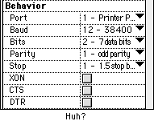
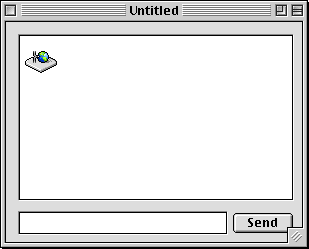
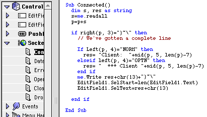
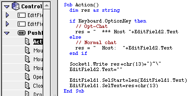
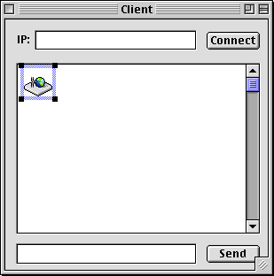
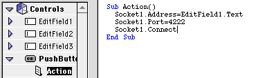
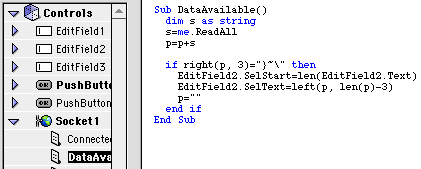
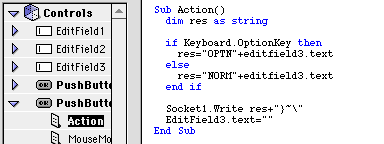

Sockets
Cover Story
For most people, nothing can be more confusing than the TCP/IP socket control (making it great for a cover story!).
However, this control is something that makes RB almost as good as any other programming language for internet apps.
 Before the Internet, the only way to connect to the outside world using a modem was to talk directly to the modem. This was a confusing and complex mess. For an idea of all the settings you had to have, just look at a serial control. I doubt you ever wanted to know what XON, CTS and DTR were, not to mention Stop bits and Parity. Though there was a lot you could do with a modem, there were still a few things that were impossible, like being connected to two places at once.
The internet changed all that. Now, you could have multiple connections open at the same time. And as an extra bonus, you didn't have to fiddle with all those cryptic settings!
Simply transmitting data is pointless though. You have to send it in some type of format. A system for sending requests, and getting files from a server is called a protocol. There are doezens of protocols, and you can make one of your own if you want. All you'll need to do is create a server application, and a client application.
But enough of making your own protocol. Here's a list of all the major protocols, and what subclass you can use to access them:
| Protocal | Class | Price | Author |
|
|
|||
| HTTP-Hypertext Transfer protocol | httpSocket 1.3 | free | Dan Vanderkam |
| FTP-File Transfer protocol | RB FTP | free | Brian F. Jones |
| Hotline-Hotline Protocol | HotlineSocketLite HotShell* HotSocket * |
free free $30 |
Jason Toffaletti & Spht Kevin Pfohr & Nick James Milne |
| POP3-Post Office Protocol | POP3 Class | free | Bjorn Einhugur |
| SMTP-I have no idea. | xSMTP | free | Brian F. Jones |
| Finger-Finger protocol | CrossFinger | free | Brian F. Jones*** |
| Telnet | <none> | -- | -- |
| AOL-America Off (oops!) Online** | <none> | -- | -- |
Making your own protocol
The first step in making your own protocol is laying it out, deciding
what it will do, and how it will do it. Let's make our protocol a simple chat protocol.
Here's how it will work:
• Everything that is sent is sent in the following format:
NORM Hello Everyone! }~\ A four letter code that tells
the server what type of info
is contained in the next field.The actual content. This
would appear in the chat
window.A terminator that tells
the server that the info
is done.• There are three codes:
NORM - A normal chat item
OPTN - A special chat item (like an opt-chat in Hotline)• There can only be two people on the server (this is for simplicity).
Confused? It's not that bad. Here are some examples of what is sent and what happens:
| What is sent | What happens |
| NORMHello everyone}~\ | Someone: Hello Everyone appears in everyone's chat window. |
| OPTNis insane}~\ | *** Someone is insane appears in everyone's chat window. |
Hopefully that made it a tad more clear. All that the client applications will ever recieve is text that ends with }~\. They simply put that in the chat window.
Making the server
The server application is the most important part of a protocol. It will do most of the work, and has to be in near-constant communication with multiple people.
Sockets can either listen or connect. If a socket is listening, then it waits for other sockets to connect to it (using their cleverly named Connect method). If they're not listening, then they can connect to any other server that IS listening.
For a server naturally, all the sockets should be listening. That way, when a client connects, they can respond correctly.
So, in the server project, create a socket (make sure its port property is set to 4222) and and two editfields. Then create a pushbutton next to the second editfield. In the window's open event, put this code: Socket1.Listen. This forces the socket to wait until a user connects to it. Also, create a property in the window called "p as string" The window should look something like this:

Now open the code editor for the socket. In the DataAvailable event, put in the code you see below:

This code runs whenever the client has sent data. For example, when they type a line of chat, this routine handles it. It takes whatever they sent, and sends it back in the correct format. Then, it adds it to the server's chat window.
Now we want the server to be able to send some chat text of their own! So, in the pushbutton's action event, put this:

This allows the person running the server to participate in the chat as well. The last two lines of each of these pieces of code add the text to the edit field. Why didn't I just use "EditField1.Text=EditField1.Text+res"? Because that makes the field flicker like crazy (see last month's tips).
Believe it or not, that's all there is to the server! That wasn't hard at all! Now for the client, which isn't even that complicated...
The Client
The client is the part of the program that does the connecting. So, for a start, make a window that looks like this:

The client program is fairly simple. Also make a "p as string" property in it, just like you did in the server project.
In the Connect button's action event...

This tells the socket what server to connect to, what port to use, and then connects.
In the DataAvailable event of the socket...

This routine is similiar to the server's, but it doesn't send back any text. It just takes whatever it gets, checks to see if that's all there is, and then adds it to the chat field.
In the Send button's action event...

This routine is simple enough. It checks whether they held down option as they sent the chat. It then sends the chat text and info to the server in the correct format.
And you're done!
Compile both projects, and run the server. Then open up the client, and type in "127.0.0.1" in the IP field. 127.0.0.1 is a shortcut that basically means "my IP address". Then click connect, and chat away!
If you want to connect to another person, then type their IP instead of 127.0.0.1. You can find your own IP in the Info box of your PPP program (i.e. OT/PPP, FreePPP, MacPPP, etc.)
More Stuff
As you probably realize, this client/server demonstration is hardly very powerful, but it could easily be improved. Here are some tips that you might want to try yourself:
This tutorial should give you the groundwork for making your own protocols, and client & server apps. Who knows, you might just make the next Hotline...